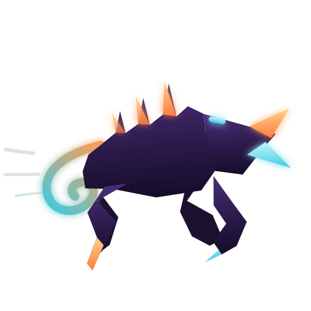

Zerg rush, только рой — это два ИИ-агента, а ранняя атака — это ваш код. Петля «исполнитель ↔ ревьюер» без постоянного участия человека.
Мультиагентная петля разработки: два независимых CLI-агента по очереди передают друг другу задачи, пока код не сойдётся к принятому виду. Оркестратор — тупой; вся «умность» в агентах.
Каждый вызов — свежий kimi -p / claude -p. Память итераций живёт в файлах и git, а не в контекстном окне.
Ревьюер смотрит git diff, а не рассказ исполнителя о том, что он сделал. Каждая принятая итерация — коммит.
Verdict ревьюера — закрытые enum'ы severity/category. Невалидный ответ агента — один retry, затем эскалация человеку.
Оркестратор запускает обоих агентов свежими subprocess-вызовами; асимметрия ролей — намеренная: ревьюер не видит рассуждений исполнителя, только требования и diff.
Получает задачу + diff + последний verdict. Может открыть dispute, если требование противоречит коду — тогда задача уходит на реплан, а не тонет в бесконечных попытках.
Строго read-only: только требования и git diff. Выносит verdict с закрытым enum'ом severity/category — иначе «взаимные комплименты» агентов не остановить.
git clone git@github.com:Orange-hanter/zairgrush.git cd zairgrush/tools/swarm python3 -m pytest # тесты ./swarm-cli --root /путь/к/репо doctor # проверка окружения ./swarm-cli --root /путь/к/репо go --goal "цель" # от и до эскалации